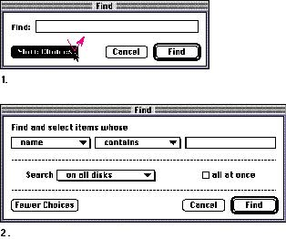
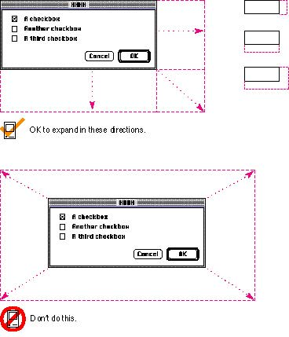

|
Using Progressive DisclosureProgressive disclosure is one way to reduce the complexity of your designs. It allows you to present the most common choices to users while initially hiding more complex choices or additional information. Progressive disclosure helps you develop your interface so that it is easy for novice users to learn and includes the features and power that advanced users desire.For dialog boxes, you can implement progressive
disclosure and thus reduce the complexity of your design by
presenting only the most common options in the dialog box
that appears initially on the screen. There are a couple of
techniques you can implement to allow users to see more
options. The most standard method of letting users see more
choices is including a button named More Choices in the
lower-left corner of the dialog box. When the Figure 3-1 An expanding dialog box  |
|
|
If you include a More Choices button in a dialog box, it's
best to extend the bottom of the window to accommodate the
additional information. You could move a side of the window
without causing too much change in the perceived stability
of the window. However, avoid expanding the window
symmetrically in all directions, because this behavior
destroys the user's initial sense of the window being one
object with some of it not visible. In general, it's best
to keep all controls visible at all times. Also, if the
larger state of the dialog box won't fit on the screen when
the More Choices button is selected, move the dialog box
the minimal amount necessary to make it fit on the screen.
When the user clicks the Fewer Choices button, keep the
dialog box in its new position; don't move it back
to its original position on the screen.
Figure 3-2 shows the directions in which a window or dialog box can grow to disclose more information. Figure 3-2 Directions a window can expand  |